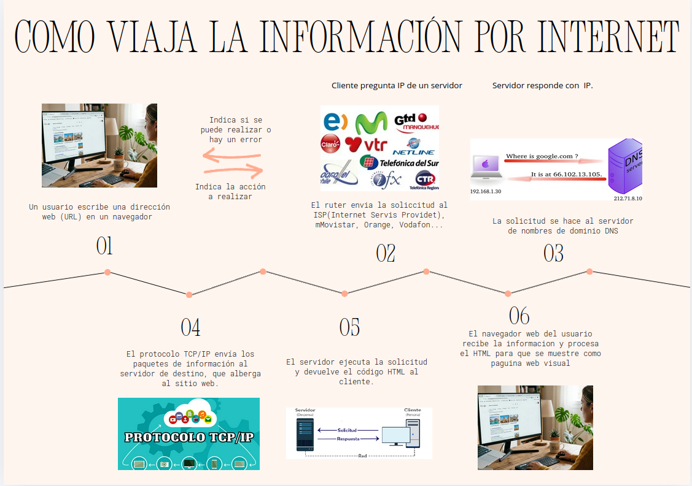

💡 Qué es una página web:
Una página web es un documento digital que se puede visualizar en un navegador de Internet. Contiene información como texto, imágenes, vídeos o enlaces. Las páginas web están creadas principalmente con HTML, CSS y JavaScript. Cada página tiene una dirección única llamada URL. Se utilizan para informar, comunicar o mostrar contenidos. Varias páginas conectadas forman un sitio web.
🖥️ Qué es un sitio web:
Un sitio web es un conjunto de páginas web relacionadas entre sí y conectadas mediante enlaces. Todas las páginas pertenecen al mismo dominio y comparten información similar. Los sitios web pueden pertenecer a empresas, personas o instituciones. Su objetivo puede ser informar, vender productos o compartir contenido. Los usuarios acceden a ellos desde un navegador web. Un sitio web puede contener textos, imágenes, vídeos y formularios.
🌍 Cómo funciona Internet:
Internet funciona como una red mundial que conecta millones de dispositivos entre sí. Cuando una persona entra en una página web, su dispositivo envía una solicitud a un servidor. El servidor responde enviando los archivos necesarios para mostrar la web. Toda la información viaja mediante redes y protocolos de comunicación. Internet permite compartir información rápidamente desde cualquier lugar del mundo. Gracias a ello, las personas pueden navegar, comunicarse y acceder a servicios digitales.
🔎 Qué hacen los navegadores y servidores:
El navegador es el programa que permite acceder y visualizar páginas web en Internet. Interpreta el código HTML, CSS y JavaScript para mostrar correctamente el contenido. El servidor es el ordenador que almacena las páginas web y sus archivos. Cuando el usuario solicita una página, el servidor envía la información al navegador. Ambos trabajan juntos para permitir la navegación por Internet. Gracias a ellos, las páginas pueden verse correctamente en diferentes dispositivos.
📡 Cómo viaja la información por la red:
La información viaja por la red en forma de datos digitales divididos en pequeños paquetes. Estos paquetes se envían desde un dispositivo hasta otro a través de diferentes redes y servidores. Los protocolos de Internet organizan y controlan el envío de la información. Cuando los datos llegan a su destino, el dispositivo los vuelve a unir correctamente. Este proceso ocurre en pocos segundos. Gracias a ello, es posible cargar páginas web, enviar mensajes o reproducir vídeos online.
